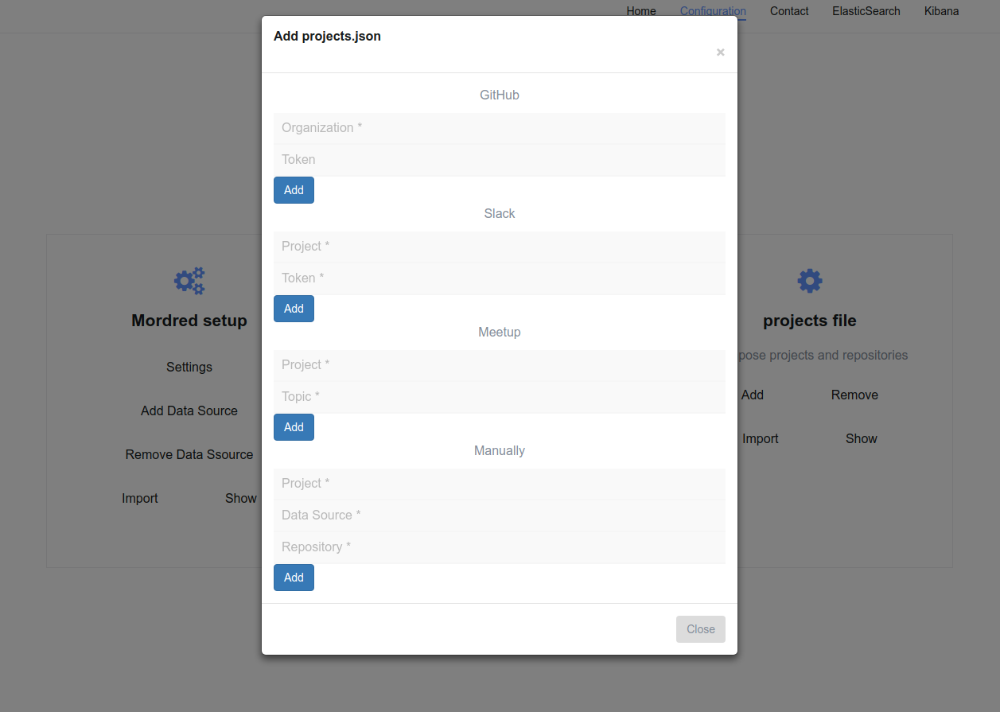
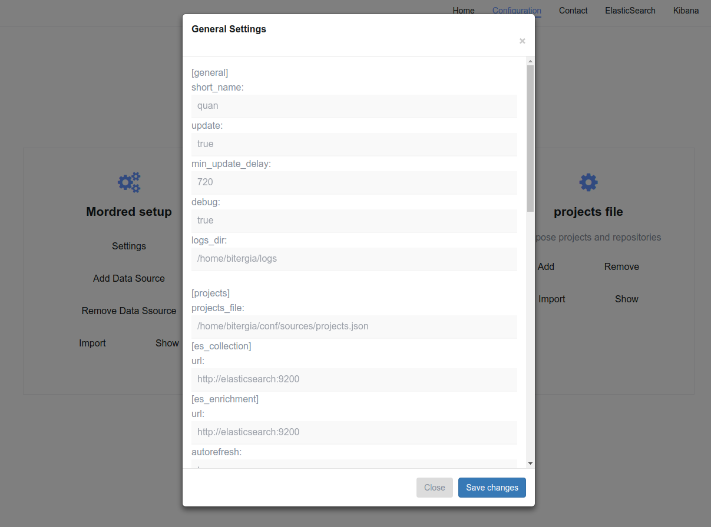
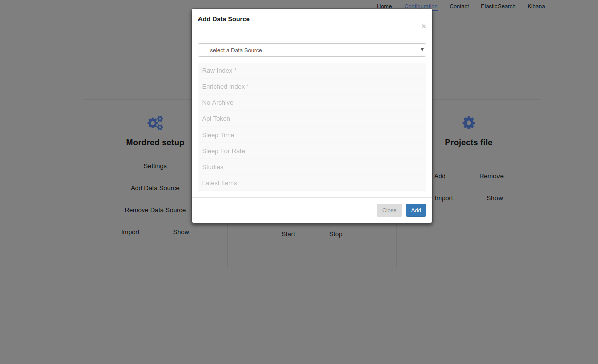

Q-DashMan
Data Visualization of Software Development
Course: 2018/2019
Tutor: Dr Jesús María González-Barahona
Created by Quan Zhou
V
Abstract
Q-DashMan is a web application used to generate dashboards with metrics about a software's project development in an easy way. For that, we use Django (as development's framework of web applications) and GrimoireLab's tools (several tools to collect, analyze and view metrics about software's development).
Q-DashMan uses several GrimoireLab’s tools. Its final goal is to export data from the systems where you develop and analyze the software to produce at the end a dashboard that shows interesting metrics in an interactive way. Q-DashMan let specifying which ones are those systems for a specific project and manages the whole process till the dashboard is ready to work.
GrimoireLab’s tools used are the following:
- SirMordred: Orchestration.
- Perceval: Data collection.
- Sortinghat: Affiliate identities automatically.
- Sigils: Data Visualization.
Consequently, GrimoireLab gives you the tools you need. However, writing files set forMordred is difficult and boring and it forces you to let the machine access to the place where the analysis is going to happen due to you need to manage the set file and run the tools.
In this part of the process is where Q-DashMan offers an alternative: an app who offers the generation
of dashboards as a service. The user interface that it offers is very simple comparted with the files
set by SirMordred, you’d only need to complete some files to specify the data source of the project
you’re going to analyze.
For instance:
Create the projects file

Create the SirMordred set up file

Add data source into SirMordred set up file

All the rest is completely automatic since Q-DashMan produces a dashboard hiding the difficult use of all GrimoireLab’s tools to the user.
We used development web standard technologies to built Q-DashMan based on Django framework. The tool is written in Python, it uses a database MariaDB and it can be deployed in a simple way by using Docker containers. The tool is easy to deploy and it’s being used as a trial in environments as preproduction to build dashboards in more than 10 different projects.
As a conclusion, Q-DashMan is designed to offer the generation of development software projects dashboards as an automatic service, generated by users with any management.

SOURCE CODE